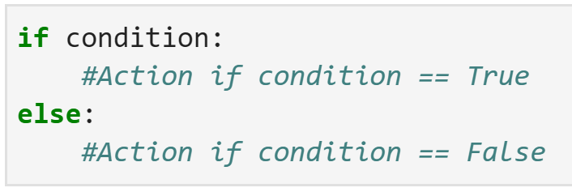
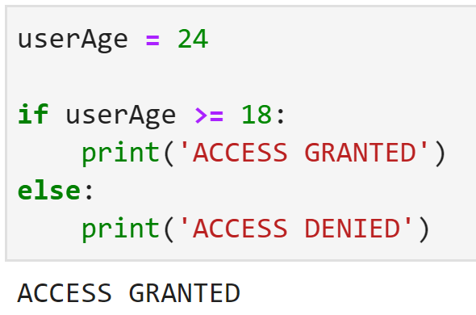

Introduction to Python
Learn more about the python programming Lanuage
Python If Else Statements
Python's if-else statements enable developers to create code that makes decisions based on specific conditions. These statements are frequently employed in programming to regulate the flow of a program based on a set of rules or criteria.
The fundamental syntax of an if-else statement in Python is as follows:

To write an if-else statement in Python, the syntax starts with the if keyword, which is followed by a condition that needs to be evaluated. If the condition is found to be true, the code inside the if block is executed. In case the condition is false, the code inside the else block is executed instead.
If-else statements are a versatile feature that can be applied in many different scenarios in daily life. For instance, they can be used in a basic program to determine whether a user is an adult by checking if they have reached their age against the age limit. Here's an example:

In this example, the user is prompted to enter a their age. The program then uses an if-else statement to determine whether the person meet the required age requirement. If the number is equal to or above 18, the program will grant access to the user. If the number is below 18, the program prints will deny access..
In summary, if-else statements are a crucial aspect of programming in Python and have multiple applications. They enable programmers to make decisions based on certain conditions and manage the flow of a program based on logical rules. By having a good understanding of if-else statements, programmers can develop sophisticated and adaptable programs that can be utilized in various everyday contexts.